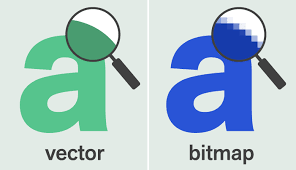
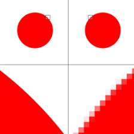

Des te meer pixels deste scherper de afbeelding, een afbeeling die is opgebouwd uit pixels noemen we een bitmapafbeelding.
Bitmapafbeeldingen hebben twee belangrijke eigenschappen, die wel nadelig zijn.
1. Een bitmapafbeelding neem veel opslagruitme in beslag.
2. Als je inzoomt zie je de losse pixels zitten, dit heeft als gevolg dat de afbeelding onscherp wordt.

Een afbeelding die is opgebouwd uit opgeslagen vormen van een afbeelding noem je ook wel een vectorafbeelding.
Een vectorafbeelding zal vooral voor grotere afbeeldingen gebruitkt worden, zoals een reclamebord langs de snelweg.
Het voordeel van een vectorafbeelding is dat een vergroting of verkleining niet voor onscherpte zorgt.
